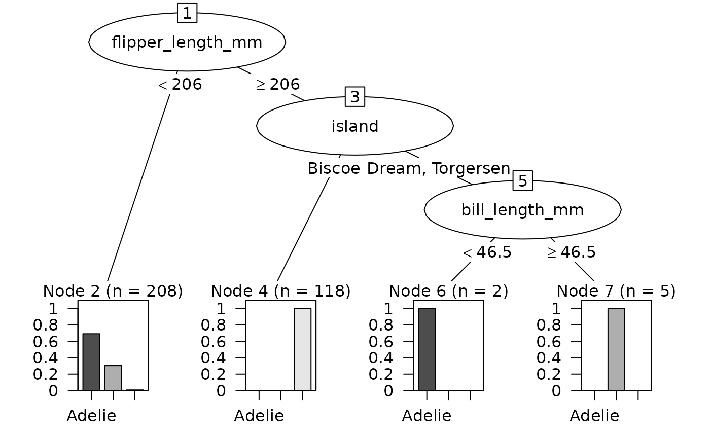

as.party.C5.0.RdConvert a single tree from a C5.0 decision tree or boosted model to a party object for use with partykit visualization and analysis tools.
# S3 method for class 'C5.0'
as.party(obj, tree = 1L, data = NULL, ...)A C5.0 object from the C50 package.
Integer specifying which tree to convert (1-based indexing,
default is 1). For single tree models, use tree = 1. For boosted models
with trials > 1, this selects which boosting iteration to extract.
Data.frame containing the training data, including both predictors and response variable. Required for proper party object creation with fitted values and node summaries.
Not currently used.
A party object from the partykit package.
The C50 package stores trees in a custom text format in obj$tree. This
format uses indented lines with key-value pairs:
type="2": Internal node with split
type="0": Terminal/leaf node
att="VariableName": Attribute/variable to split on
forks="n": Number of branches (2+ for numeric, can be 4+ for categorical)
cut="threshold": Numeric threshold for split
class="ClassName": Predicted class
freq="n1,n2,n3": Frequency of each class at node
Single tree models (trials = 1): Only tree = 1 is valid
Boosted models (trials > 1): Multiple sequential trees available
The tree parameter maps to trial/iteration number
Each boosting trial produces one tree
Trees stored as sequential lines in pre-order (parent, then children)
No indentation used - hierarchy determined by fork counts
Numeric ternary splits: <= threshold, missing, > threshold
Categorical multiway splits: one branch per level group
Numeric splits: typically binary (<=, >) or ternary (<=, missing, >)
Ternary numeric splits are simplified to binary by omitting the missing branch
Categorical splits: can have 2+ branches, one for each level group
Multiway categorical splits are preserved in the party object
if (rlang::is_installed(c("C50", "palmerpenguins"))) {
data(penguins, package = "palmerpenguins")
penguins <- na.omit(penguins)
# Single tree model
set.seed(2847)
c5_tree <- C50::C5.0(species ~ ., data = penguins)
party_tree <- as.party(c5_tree, tree = 1L, data = penguins)
print(party_tree)
plot(party_tree)
# Boosted model with multiple trials
set.seed(5193)
c5_boost <- C50::C5.0(species ~ ., data = penguins, trials = 3)
# Extract first boosting iteration
party_tree1 <- as.party(c5_boost, tree = 1L, data = penguins)
# Extract third boosting iteration
party_tree3 <- as.party(c5_boost, tree = 3L, data = penguins)
}
#>
#> Model formula:
#> species ~ island + bill_length_mm + bill_depth_mm + flipper_length_mm +
#> body_mass_g + sex + year
#>
#> Fitted party:
#> [1] root
#> | [2] flipper_length_mm < 206: Adelie (n = 208, err = 30.8%)
#> | [3] flipper_length_mm >= 206
#> | | [4] island in Biscoe: Gentoo (n = 118, err = 0.0%)
#> | | [5] island in Dream, Torgersen
#> | | | [6] bill_length_mm < 46.5: Adelie (n = 2, err = 0.0%)
#> | | | [7] bill_length_mm >= 46.5: Chinstrap (n = 5, err = 0.0%)
#>
#> Number of inner nodes: 3
#> Number of terminal nodes: 4
